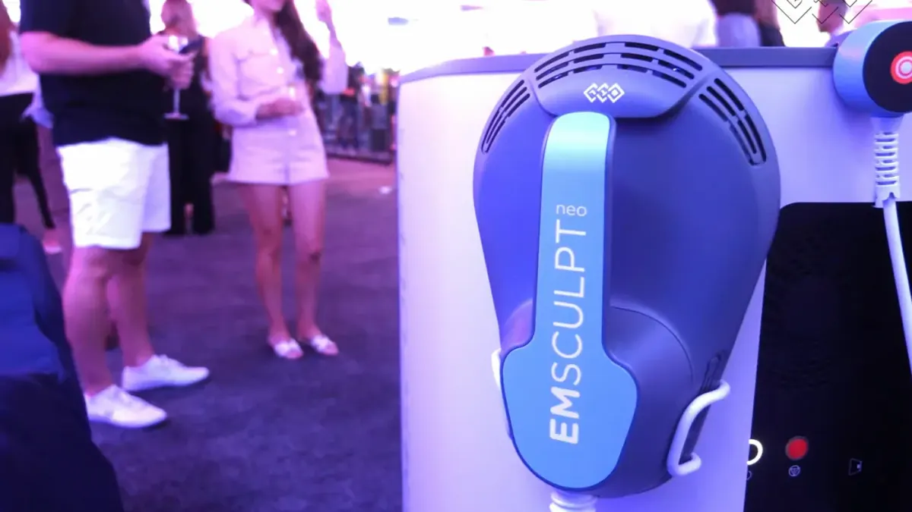
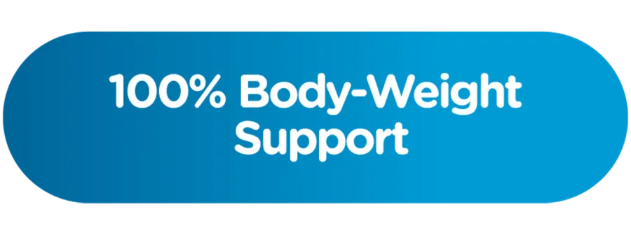
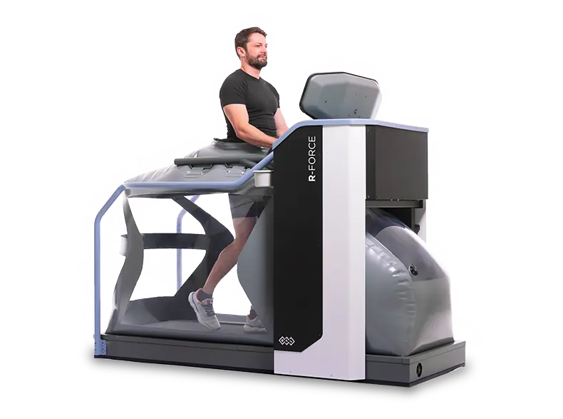
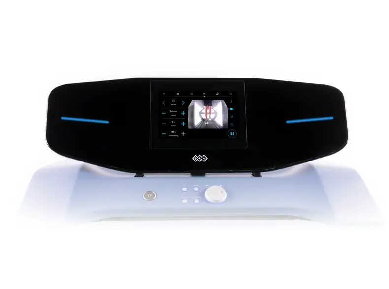

R-Force Anti-Gravity Treadmill
Revolutionary technology for gait training with full body weight support. R-Force is the ONLY technology that enables gait training with up to 100% body weight support.

100% weight support
The air pressure chamber unloads the patient's weight and allows up to 100% weight support – weightless training from day 1 after injury or surgery.
Real-time biofeedback
The integrated wide-angle camera provides real-time gait analysis. Patients can easily correct their gait thanks to visual biofeedback.
Motivating games
Through motivating games, patients can improve their balance and gait style and increase therapy compliance.

Areas of application


Neurological conditions
Stroke, Parkinson's, multiple sclerosis and other neurological conditions benefit from weight-supported gait rehabilitation.
Post-operative rehabilitation
After hip, knee or spine surgery, R-Force enables early mobilisation training with reduced load.
Injury rehabilitation
Sports injuries and trauma can be safely rehabilitated with progressive weight support.
Balance training
Patients with balance problems train safely in R-Force with weight support and real-time feedback.
Benefits of R-Force therapy
- Early mobilisation: Training can begin in the first phase of recovery, shortening overall outcomes.
- Safe rehabilitation: Weight support reduces the risk of injury and enables safe training for all patient groups.
- Objective progress tracking: All therapy data are recorded digitally and can be exported for objective progress assessment.
- Improved patient compliance: Motivating games and visual biofeedback increase patient motivation and therapy compliance.
Interested in R-Force therapy?
Call now: 01 / 769 29 91